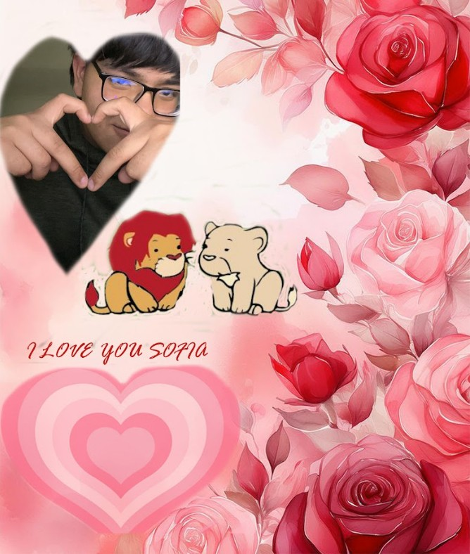

Modulo Software de diseño
🎨 Submódulo: Diseño Digital
"Manipulación Fotográfica y Composición Visual Creativa" Este submódulo se centró en el dominio de Adobe Photoshop, el estándar de la industria para la edición de imágenes rasterizadas. El objetivo fue desarrollar el "ojo clínico" para el diseño, aprendiendo a mejorar, transformar y crear piezas visuales desde cero o a partir de fotografías existentes.Al principio, la interfaz puede abrumar, pero aquí aprendí los pilares que sostienen cualquier diseño: Gestión de Capas (Layers): Entender la jerarquía visual, cómo apilar elementos y usar la visibilidad para organizar un proyecto complejo. Formatos y Resoluciones: La diferencia crítica entre DPI (para impresión) y PPI (para web), además de manejar formatos como PSD, PNG y JPG. Herramientas de Selección: El uso de lazo magnético, varita mágica y la pluma para aislar objetos con precisión quirúrgica.Aquí es donde aprendí a "curar" imágenes y mejorar la realidad: Herramientas de Clonación y Parche: Uso del Tampon de clonar y el Pincel corrector puntual para eliminar imperfecciones, personas u objetos no deseados de una foto. Ajustes de Color y Exposición: Manipulación de niveles, curvas, brillo y saturación para cambiar por completo la atmósfera de una imagen. Filtros Inteligentes: Aplicación de desenfoques, enfoques y licuado para estilizar retratos o paisajes sin destruir la imagen original.
